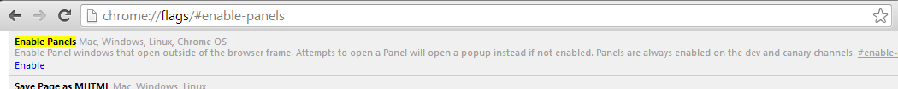

chrome://flags#enable-panels

Click On Enable And Restart Chrome
(If They Are Already Enabled Then Carry On Using The Extension ! Cheers)
Why Should I Do This?
The Extension Generates an Always on top window That is still Experimental in chrome which is required By This Extension
 This is a Panel Window
This is a Panel Window